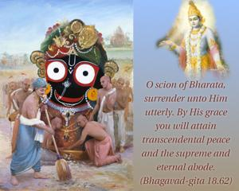
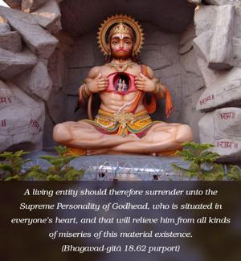

O scion of Bharata, surrender unto Him utterly. By His grace you will attain transcendental peace and the supreme and eternal abode.


A living entity should therefore surrender unto the Supreme Personality of Godhead, who is situated in everyone’s heart, and that will relieve him from all kinds of miseries of this material existence. By such surrender, not only will one be released from all miseries in this life, but at the end he will reach the Supreme God. The transcendental world is described in the Vedic literature (Ṛg Veda 1.22.20) as tad viṣṇoḥ paramaṁ padam. Since all of creation is the kingdom of God, everything material is actually spiritual, but paramaṁ padam specifically refers to the eternal abode, which is called the spiritual sky or Vaikuṇṭha.
In the Fifteenth Chapter of Bhagavad-gītā it is stated, sarvasya cāhaṁ hṛdi sanniviṣṭaḥ: the Lord is seated in everyone’s heart. So this recommendation that one should surrender unto the Supersoul sitting within means that one should surrender unto the Supreme Personality of Godhead, Kṛṣṇa. Kṛṣṇa has already been accepted by Arjuna as the Supreme. He was accepted in the Tenth Chapter as paraṁ brahma paraṁ dhāma. Arjuna has accepted Kṛṣṇa as the Supreme Personality of Godhead and the supreme abode of all living entities, not only because of his personal experience but also because of the evidence of great authorities like Nārada, Asita, Devala and Vyāsa.